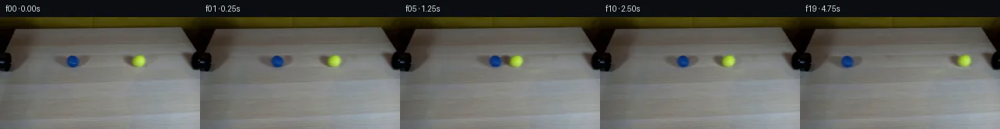

![首帧]()

Round 00
2026-11-04T22:30:14.563715+00:00像素候选变化代码 +269/−0inspection 更新
pixels fde6930ad95596f8 · code e5448c0d56505a15
查看本轮 generate.py 真实 diff
--- previous/generate.py
+++ current/generate.py
@@ -0,0 +1,269 @@
+"""Deterministic local pixel continuation with analytic equal-mass dynamics."""
+from pathlib import Path
+import json
+import numpy as np
+import cv2
+from scipy.optimize import least_squares
+from PIL import Image, ImageDraw
+from artifact_io import save
+
+ROOT = Path(__file__).resolve().parent
+W, H, N, FPS = 256, 144, 20, 4
+INITIAL = np.asarray(Image.open(ROOT / 'first_frame.png').convert('RGB'))
+YY, XX = np.mgrid[:H, :W].astype(np.float32)
+SLOPE = -.6 / 85
+CONTACT = 1.5
+SPEED = (85 - 15.5) / (2 * CONTACT)
+RESTITUTION, DECEL = .94, .65
+BALLS = [dict(name='blue', x=93., y=56.6, radius=7.60,
+ plate_x=87.5, plate_y=55.8, rx=29.5, ry=13.3),
+ dict(name='yellow', x=178., y=56., radius=7.90,
+ plate_x=171., plate_y=55.5, rx=27., ry=12.8)]
+
+
+def smoothstep(x):
+ x = np.clip(x, 0, 1)
+ return x * x * (3 - 2 * x)
+
+
+def build_plate():
+ """Continue horizontal wood grain across the two initial ball/shadow footprints."""
+ source = INITIAL.astype(np.float32)
+ plate = source.copy()
+ masks = []
+ for ball in BALLS:
+ rr = np.sqrt(((XX-ball['plate_x'])/ball['rx'])**2 +
+ ((YY-ball['plate_y'])/ball['ry'])**2)
+ mask = 1-smoothstep((rr-.78)/.22)
+ masks.append(mask)
+ for y in range(H):
+ ix = np.flatnonzero(mask[y] > 0)
+ if not len(ix):
+ continue
+ left, right = int(ix[0]), int(ix[-1])
+ # Sample the same grain row on both sides; use farther samples to
+ # avoid the faint penumbra near the silhouette's exterior.
+ l0, l1 = max(0,left-9), max(1,left-3)
+ r0, r1 = min(W-1,right+4), min(W,right+10)
+ lv = np.median(source[y,l0:l1], axis=0)
+ rv = np.median(source[y,r0:r1], axis=0)
+ mix = ((ix-(l0+l1-1)/2) / ((r0+r1-1)/2-(l0+l1-1)/2))[:,None]
+ trend = lv*(1-mix) + rv*mix
+ # Transfer low-amplitude real grain texture from a nearby clean
+ # interval, with its row mean removed. No procedural new objects.
+ donor_x = 120 + (np.arange(len(ix)) % 25)
+ donor = source[y,donor_x]
+ detail = donor-cv2.GaussianBlur(donor[None],(9,1),2)[0]
+ fill = trend + .55*detail
+ a = mask[y,ix,None]
+ plate[y,ix] = source[y,ix]*(1-a) + fill*a
+ return plate, masks
+
+
+def shadow_gaussian(parameters, ball):
+ cx,cy,sx,sy,angle = parameters[:5]
+ dx,dy = XX-cx,YY-cy
+ u = dx*np.cos(angle)+dy*np.sin(angle)
+ v = -dx*np.sin(angle)+dy*np.cos(angle)
+ g = np.exp(-.5*((u/sx)**2+(v/sy)**2))
+ return 1-g[...,None]*np.array(parameters[5:8])[None,None,:]
+
+
+def extract_ball(ball, plate, footprint):
+ source = INITIAL.astype(np.float32)
+ distance = np.hypot(XX-ball['x'],YY-ball['y'])
+ # A photographic soft matte; retain the original silhouette and colors
+ # through premultiplied foreground recovery, including its blurred rim.
+ alpha = .5*(1-np.tanh((distance-ball['radius'])/1.05))
+ alpha[distance>ball['radius']+4] = 0
+ ratio = source/np.maximum(plate,1)
+ select = (footprint>.025) & (distance>ball['radius']+2.1)
+ initial = [ball['x']-10,ball['y']-1.5,13.,3.6,.04,.30,.34,.37]
+ lower = [ball['x']-19,ball['y']-5,5.,1.5,-.35,.01,.01,.01]
+ upper = [ball['x']-3,ball['y']+1,22.,7.,.35,.65,.65,.65]
+ def loss(p):
+ return (shadow_gaussian(p,ball)[select]-ratio[select]).ravel()
+ fit = least_squares(loss, initial, bounds=(lower,upper), loss='soft_l1',
+ f_scale=.035,max_nfev=160)
… diff truncated; 182 more lines …